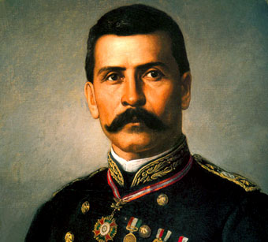
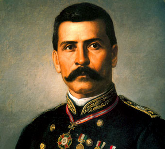

Revolucionario mexicano (San Juan del Río, Durango, 1876 - Parral, Chihuahua, 1923). Campesino pobre, huérfano y con escasa formación, cuando estalló la Revolución de 1910 llevaba varios años fugitivo en las montañas por haber asesinado a uno de los propietarios de la hacienda donde trabajaba.
Enseguida Pancho Villa se unió a Madero en su lucha contra la dictadura de Porfirio Díaz, y demostró una habilidad innata para la guerra. Aprovechando su conocimiento del terreno y de los campesinos, formó su propio ejército en el norte de México, con el cual contribuyó al triunfo del movimiento revolucionario.
En 1912 fue encarcelado, al sospechar el general Victoriano Huerta que estaba implicado en la rebelión de Orozco en defensa de las aspiraciones sociales del campesinado, que Madero había postergado. Consiguió escapar a los Estados Unidos y, tras el asesinato de Madero, regresó a México y formó un nuevo ejército revolucionario, la División del Norte (1913).
Con ella apoyó la lucha de Venustiano Carranza y Emiliano Zapata contra Huerta, que se había erigido en dictador. Juntos le derrocaron en 1914; pero después de la victoria de esta segunda revolución, Villa y Zapata se sintieron defraudados por Carranza, y volvieron a tomar las armas, ahora contra él. Esta vez la suerte militar no estuvo de su parte: Álvaro Obregón derrotó a los villistas y Carranza se consolidó en el poder, logrando el reconocimiento oficial de su gobierno por los Estados Unidos.


 
